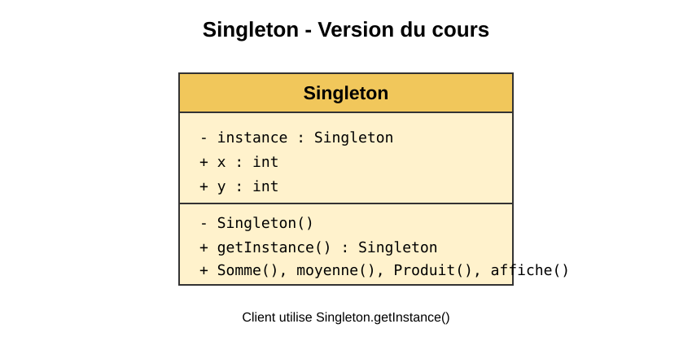
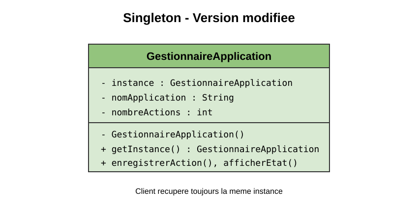

Projet : Singleton
Objectif : garantir qu'une classe ne possede qu'une seule instance et fournir un point d'acces global a cette instance.
La classe Singleton possede un attribut statique qui conserve l'instance unique. Ses constructeurs sont prives. La methode getInstance() cree l'objet uniquement lorsqu'il n'existe pas encore.
La version reprend l'exemple du support avec les attributs x et y, ainsi que les methodes Somme, moyenne, Produit et affiche.

La classe GestionnaireApplication centralise le nom de l'application et le nombre d'actions enregistrees. Plusieurs references recuperent la meme instance et partagent donc le meme etat.
La methode getInstance() est synchronisee afin de proteger la creation de l'instance dans un contexte multithread.

Les deux versions sont compilees avec javac et executees avec Java. Les tests verifient notamment que deux appels a getInstance() renvoient la meme instance.
Le patron Singleton controle la creation d'un objet et permet de partager un etat commun dans l'application. Il doit etre utilise lorsque l'unicite de l'instance est reellement necessaire.